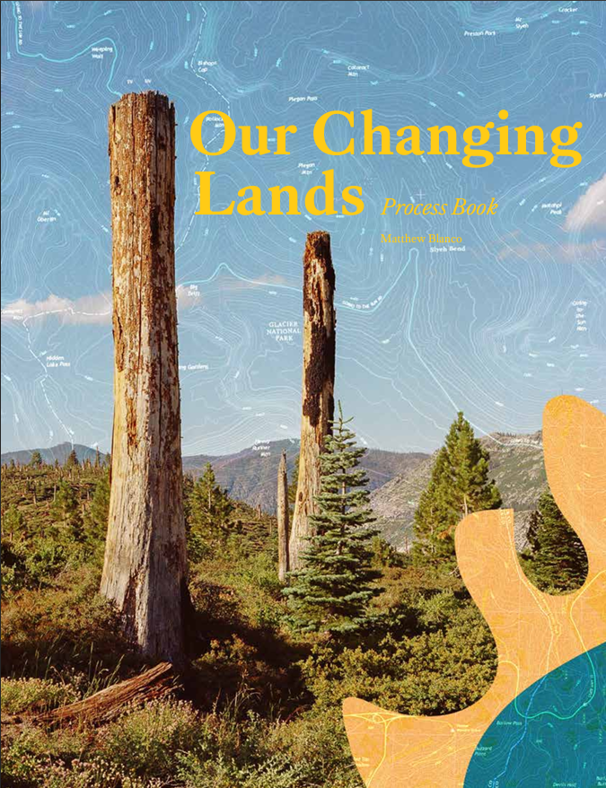

Our Changing Lands
Project Type: Graphic & Web Design
About
Our Changing Lands is a graphic design project that explores the question: “How can we create more equitable
outdoor spaces while still protecting our public lands?”
Broken into three different parts the project raises awareness to people where they are and where they are going
through print, dimensional, and digital interventions.
The exploration was done during the Fall of 2023 as an independent speculative graphic design project to imagine
how we can improve our relationship to the outdoors.
The project is an awareness campaign whose focus is on our future. A potential future where we've
become better stewards of our Earth protecting it for generations to come while making it accessible to all.
Audience:
Focusing on young adults, primarily college students, to nudge the behavior of the people who will be in future
positions of power. The goal is not to change people's behavior drastically, but simply to provide a perspective
to make people have more consideration for our world.
Scope:
The campaign works in two spaces. First in the physical world through posters encouraging anyone passing by to
think outside their doorstep to be better stewards of the outdoors, and a physical trash bin to be put at the
entrance of trailheads encouraging hikers to keep trail clean. Second in the digital world by invisioning the
website of a design studio focused on sustainability and conservation.
Research:
By conducting primary research within the Northeastern University Huskiers and Outing Club and reading secondary
research by the National Forest Service provided a baseline
on how the outdoors were viewed, and how we might be able to give more respect to our natural world.
“Land uses are driven by the blurred nature of much tourism and recreational activities, the changing mix of
domestic and international activities, and the balance between inbound and outbound tourism.”
Future Play: Tourism, Recreation and Land Use

Dimensional Series
Many trailheads lack waste bins where hikers have to pack out any trash they create, and discourage people from
picking up trash they might find on trail. Placing wildlife safe waste bins can incentivize hikers, who usually
already support conservation, to make an effort to keep trails clean.
Due to little 3D modeling experience, the dimensional series served as a conceptual exploration into what a
intervention may look like to bridge the solutions from the 2D world of print & digital into the
physical.
The bins follow the visual aesthetic and language from the poster series and applies it to a physical product.
When seen from a trailhead, the bins would stand out and give hikers an opportunity to get rid of any of their own
(or found) trash. This portion of the project focused one simple task all hikers can do while on trail: Pick up
trash keeping our natural lands clean.
Digital Series
The final part of the project is imagining a research-based design studio working through partnerships and
standalone projects focused on outdoor sustainability. What would a sustainable design studio look like?
Especially one partnering with outdoor brands while conducting in-house design reseach.
Prototyped in Figma, the purpose of the last portion of the project was focused on the speculative. By combining
the unique visual language used throughout the project and applying to the medium of a website it created a strong
and powerful brand image.
Research
Potter, J. D., Brooks, C., Donovan, G. H., Cunningham, C., &
Douwes, J. (2023). v Science of the Total Environment, 892,
164772. https://doi.org/10.1016/j scitotenv.2023.164772
Winter, Patricia L., et al. “Outdoor Recreation, Nature-Based
Tourism, and Sustainability.” Sustainability, vol. 12, no. 1, Dec.
2019, p. 81. Crossref, https://doi.org/10.3390/su12010081.
Williams, Allan M., and Gareth Shaw. “Future Play:
Tourism, Recreation and Land Use.” Land Use Policy, vol.
26, Dec. 2009, pp. S326–S335, https://doi.org/10.1016/j.
landusepol.2009.10.003.
Denys Yemshanov, et al. “Comparing Landscape Partitioning
Approaches to Protect Wildlife Habitat in Managed Forests.”
Canadian Journal of Forest Research, 13 July 2023, https://doi.
org/10.1139/cjfr-2022-0272.